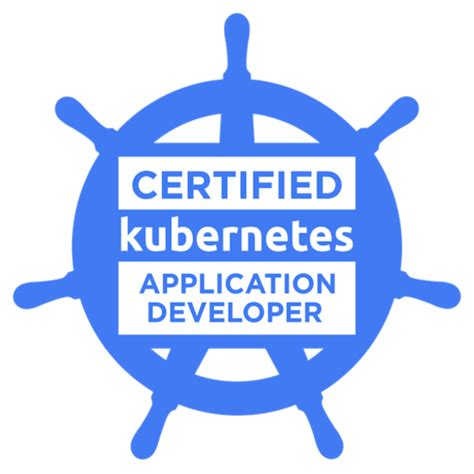

Kubernetes Certified Application Developer (CKAD) Notes

https://www.cncf.io/certification/ckad/
Kubernetes Certified Application Developer (CKAD) Notes
- CNCF Official CKAD Main
- CNCF Kubernetes Curriculum Repo
- CNCF Official CKAD Exam Tips
- CNCF Official CKAD Candidate Handbook
- VIM Cheatsheet - You should know VIM pretty well
- Excellent CKAD Exercises to complement this guide
- More CKAD Practice Questions
- TMUX Cheat Sheet - TMUX is useful, especially for CKA
- Answers to 5 Kubernetes CKAD Practice Questions
Important vi Tips
- ‘dG’ - Deletes contents from cursor to end of file. This is very useful when editing YAML files.
- ‘ZZ’ - Save and exit quickly.
kubectl Tips
To set nano as your editor for ‘kubectl edit’
export KUBE_EDITOR="nano"
Table of Contents
- Current Kubernetes Version (EXAM)
- Important vi Tips
- kubectl Tips
- Tips
- Overview
- Current Progress
- Where to Practice
- Detailed Review
- Tasks from Kubernetes Doc
Tips
Okay, this section is new and contains some general pointers to help pass the exam.
First, as discussed later, the exam is primarily about speed. With that in mind, the best way to approach the moderate to complex questions is to generate the initial YAML via the dry run flag. Then, edit the file with either vi or nano, and then create the required resource. The steps are outlined below.
$ kubectl run nginx --image=nginx --restart=Never --dry-run -o yaml > mypod.yaml
$ nano mypod.yaml
$ kubectl create -f mypod.yaml
pod "nginx" created
There you go. If you’re not satisfied with the results. Delete the resource, re-edit the declaritive yaml file, and redo.
$ kubectl delete -f mypod.yaml
pod "nginx" deleted
$ nano mypod.yaml
$ kubectl create -f mypod.yaml
pod "nginx" created
Overview
The exam is 100% hands on using the innovative exams (www.examslocal.com) product. The CKAD exam requires an excellent understanding of K8s along with how to efficiently use kubectl to accomplish various tasks on Kubernetes. I’m sure they use this exam approach as it pretty much precludes any form of cheating. You either know the material and can very quickly implement it or not.
You will be given a list of ‘tasks’ to accomplish on one of four kubernetes clusters (these are described in the official exam tips above). The exam is ‘open book’ but only with the content available at kubernetes.io. You will have one tab for the exam content and one additional tab for kubernetes.io. However, don’t expect that you can just research questions during the exam, as there will be very little time for ‘learning’ a specific k8s concept at exam time. It’s there to help with YAML syntax detail only, IMO.
The items in this particular repo / page describe and follow the official curriculum and point back to the various documents at Kubernetes.io. There is a lot of content on k8s and a lot of it does not pertain to the CKAD exam, so I’ve pulled out the sections that are pertinent based on the curriculum. There is a nice checklist below that you can update once you think you have mastered a particular topic.
I think the best approach is to fork this repo as a starting point for your studies, and then use the markdown checklist to ensure you cover all of the expected material, etc.
Current Progress
The list below is based on the curriculum v1.0. Once you have mastered a section, check it off and move on to the next. You need to understand them ALL very well. The Core Concepts piece is kind of vague, but the others are defined well enough that it is easy to prepare for with a hands-on work through the tasks offered at kubernetes.io. The rest of this document follows this same outline of curriculum.
- Core Concepts - 13%
- API Primitives
- Create and Configure Basic Pods
- Configuration - 18%
- Understand ConfigMaps
- Understand SecurityContexts
- Define App Resource Requirements
- Create and Consume Secrets
- Understand Service Accounts
- Multi-Container Pods - 10%
- Design Patterns: Ambassador, Adapter, Sidecar
- - Sidecar Pattern
- - Init Containers
- Design Patterns: Ambassador, Adapter, Sidecar
- Pod Design - 20%
- Using Labels, Selectors, and Annotations
- Understand Deployments and Rolling Updates
- Understand Deployment Rollbacks
- Understand Jobs and CronJobs
- - State Persistence - 8%
- - Understand PVCs for Storage
- Observability - 18%
- Liveness and Readiness Probes
- Understand Container Logging
- Understand Monitoring Application in Kubernetes
- Understand Debugging in Kubernetes
- Services and Networking - 13%
- Understand Services
- Basic Network Policies
Where to Practice
This particular items was difficult for me as I didn’t have a (current) k8s cluster to use at work. As I was initially studying for the CKA which requires more cluster-level work, I tried many, many different approaches for an inexpensive k8s environment. built many clusters using K8s The Hard way on gcloud (and AWS), built a raspberry pi cluster I could carry to work, and tried using kubeadm / kops on gcloud and aws.
In my opinion, and all that is required to pass this test, is to just setup a gcloud account, and use a two-node GKE cluster for studying. Heck, you can even use the very nice google cloud shell and not even leave your browser.
gcloud command line (SDK) documentation
Here are commands used to create a two-node cluster for studying. I keep these here just so I can fire up and destroy a cluster for a few hours each day for study. Notice that you can tailor the cluster version to match the k8s version for the exam.
gcloud config set compute/zone us-central1-a
gcloud config set compute/region us-central1
gcloud container clusters create my-cluster --cluster-version=1.15.8-gke.2 --image-type=ubuntu --num-nodes=2
The result:
NAME LOCATION MASTER_VERSION MASTER_IP MACHINE_TYPE NODE_VERSION NUM_NODES STATUS
my-cluster us-central1-a v1.15.8-gke.2 35.232.253.6 n1-standard-1 v1.15.8-gke.2 2 RUNNING
cloudshell:~$ kubectl get nodes
NAME STATUS ROLES AGE VERSION
gke-my-cluster-default-pool-5f731fab-9d6n Ready <none> 44s v1.15.8-gke.2
gke-my-cluster-default-pool-5f731fab-llrb Ready <none> 41s v1.15.8-gke.2
Setting kubectl Credentials
If using the cloud shell, you’ll sometimes need to authorize kubectl to connect to your cluster instance.
gcloud container clusters get-credentials my-cluster
Deleting Your Cluster
No need to keep the cluster around when not studying, so:
gcloud container clusters delete my-cluster
To Get Current GKE Kubernetes Versions
gcloud container get-server-config
Detailed Review
The exam is about speed and efficiency. If you spend very much time looking at documentation, you will have zero chance of completing the many questions. With that said, the following will help with time management. I’ve aligned the tips to follow the curriculum. This section is best used to provide a quick overview of the curriculum along with the needed kubectl commands for a hands-on exam.
CORE CONCEPTS
The core concepts section covers the core K8s API and its primitives and resources. It also covers the important concept of a POD. This is the basic unit of deployment for app developers and so this ‘POD’ concept is important to understand as well as how they are managed with kubectl. To me, this is embodied in the kubectl RUN command.
Using the RUN/CREATE command for Pods, Deployments, etc.
The run command allows quick creation of the various high-level execution resources in k8s, and provides speed, which we need for the exam. (NOTE: The use of run to handle various resource creations was updated to instead use the create command as of 1.14)
The specific, underlying resource created from a particular create/run command is based on its ‘generator’.
$ kubectl create deployment nginx --image=nginx #deployment
$ kubectl run nginx --image=nginx --restart=Never #pod
$ kubectl create job nginx --image=nginx #job
$ kubectl create cronjob nginx --image=nginx --schedule="* * * * *" #cronJob
The above is helpful in the exam as speed is important. If the question indicates to ‘create a pod’, use the quick syntax to get a pod going.
CONFIGURATION
Configuration covers how run-time ‘config’ data is provided to your applications running in k8s. This includes environment variables, config maps, secrets, etc. Other items that are pertinent to config are the service account and security contexts used to execute the containers. The below items are covered by this part of the curriculum.
Config Maps / Environment Variables
The exam is about application development and its support within Kubernetes. With that said, high on the list of objectives is setting up config options and secrets for your applications. To create the most basic config map with a key value pair, see below.
$ kubectl create configmap app-config --from-literal=key123=value123
configmap "app-config" created
There are many ways to map config map items to environment variables within a container process. One quick, but tricky (syntax) option is shown below. This would be for a simple nginx container.
spec:
containers:
- image: nginx
name: nginx
envFrom:
- configMapRef:
name: app-config
Here is another way to map a specific value to a specific environment variable value.
containers:
- image: nginx
name: nginx
env:
- name: SPECIAL_APP_KEY
valueFrom:
configMapKeyRef:
name: app-config
key: key123
Now to verify it worked.
$ kubectl exec -it nginx /bin/bash
root@nginx:/# env
HOSTNAME=nginx
SPECIAL_APP_KEY=value123
KUBERNETES_PORT_443_TCP_PROTO=tcp
...
Security Contexts
Security contexts can be applied at either the pod or container level. Of course pod-level contexts apply to all containers within that pod. There are several ways of defining privileges and access controls with these contexts.
These concepts are covered well in the tasks section below, but here is a basic RunAs example from the doc that shows both pod and container contexts being used.
apiVersion: v1
kind: Pod
spec:
securityContext:
runAsUser: 1000
containers:
- name: sec-ctx-demo
image: gcr.io/google-samples/node-hello:1.0
securityContext:
runAsUser: 2000
allowPrivilegeEscalation: false
App Resource Requirements
Defining the memory and cpu requirements for your containers is something that should always be done. It allows for more efficient scheduling and better overall hygiene for your application environment. Again, covered well in the tasks section below, but here is a brief snippet for the standard mem/cpu specification.
apiVersion: v1
kind: Pod
spec:
containers:
- name: demo
image: polinux/stress
resources:
limits:
memory: 200Mi
cpu: 200m
requests:
memory: 100Mi
cpu: 100m
Now to verify:
$ kubectl describe po stress
Name: stress
Namespace: default
Labels: run=stress
IP: 10.36.1.17
Containers:
stress:
Image: polinux/stress
Limits:
cpu: 200m
memory: 200Mi
Requests:
cpu: 100m
memory: 100Mi
Secrets
To quickly generate secrets, use the –from-literal flag like this:
$ kubectl create secret generic my-secret --from-literal=foo=bar -o yaml --dry-run > my-secret.yaml
This produces the following secret that can then be consumed by your containers. The value is encoded.
apiVersion: v1
data:
foo: YmFy
kind: Secret
metadata:
creationTimestamp: null
name: my-secret
Now create the secret:
$ kubectl create -f my-secret.yaml
secret "my-secret" created
Now have a look at it:
kubectl get secret my-secret -o yaml
apiVersion: v1
data:
foo: YmFy
kind: Secret
metadata:
name: my-secret
namespace: default
uid: bae5b8d8-d01a-11e8-8972-42010a800002
type: Opaque
Decode it:
$ echo "YmFy" | base64 --decode
bar
Secrets can be mounted as data volumes or be exposed as environment variables to be used by a container in a pod. Here we’ll mount our above secret as a volume.
apiVersion: v1
kind: Pod
metadata:
name: secrets-test-pod
spec:
containers:
- image: nginx
name: test-container
volumeMounts:
- mountPath: /etc/secret/volume
name: secret-volume
volumes:
- name: secret-volume
secret:
secretName: my-secret
Service Accounts
When pods are created by K8s they are provided an identify via the service account. In most cases, pods use the default service account, but it can be specified directly.
apiVersion: v1
kind: Pod
metadata:
name: my-pod
spec:
serviceAccountName: build-robot
...
MULTI-CONTAINER PODS
This particular section needs additional detail as these concepts are not covered that well via the tasks provided at kubernetes.io. Actually, the best coverage (for sidecars) is in the concepts section under logging architecture.
-
One or more containers running within a pod for enhancing the main container functionality (logger container, git synchronizer container); These are sidecar container
-
One or more containers running within a pod for accessing external applications/servers (Redis cluster, memcache cluster); These are called ambassador container
-
One or more containers running within a pod to allow access to application running within the container (Monitoring container); These are called as adapter containers-
Concepts -> Logging Architecture
POD DESIGN
The Pod design section mostly covers deployments, rolling updates, and rollbacks (and jobs). These are all covered well in the tasks section later in this document. The primary trick here is to really understand the basic commands for updating a deployment which causes a new replicaSet to be created for the rollout. Both replica sets exist as the rollout continues and completes.
Deployment Updates
Below is a quick example of creating a deployment and then updating its image. This will force a rolling deployment to start. You can then roll it back.
$ kubectl run nginx --image=nginx --replicas=3
deployment.apps "nginx" created
Okay, now force a rolling update by updating its image.
$ kubectl set image deploy/nginx nginx=nginx:1.9.1
deployment.apps "nginx" image updated
Now you can check the status of the roll out.
$ kubectl rollout status deploy/nginx
Waiting for rollout to finish: 2 out of 3 new replicas have been updated...
Waiting for rollout to finish: 1 old replicas are pending termination...
Waiting for rollout to finish: 2 of 3 updated replicas are available...
deployment "nginx" successfully rolled out
Now, if you want to roll it back:
$ kubectl rollout undo deploy/nginx
$ kubectl rollout status deploy/nginx
Waiting for rollout to finish: 1 old replicas are pending termination...
Waiting for rollout to finish: 2 of 3 updated replicas are available...
deployment "nginx" successfully rolled out
This is all describe well on kubernetes.io by searching for ‘deployment’ and reading the overview there. Kubernetes Deployments
Jobs and CronJobs
Job vs CronJob -> A job runs a pod to a number of successful completions. Cron jobs manage jobs that run at specified intervals and/or repeatedly at a specific point in time, thus they have the ‘schedule’ aspect. The below demonstrates quickly creating a cronjob and then a quick edit to add a command, etc.
$ kubectl run crontest --image=busybox --schedule="*/1 * * * *" --restart=OnFailure --dry-run -o yaml
apiVersion: batch/v1beta1
kind: CronJob
metadata:
labels:
run: crontest
name: crontest
spec:
schedule: '*/1 * * * *'
jobTemplate:
spec:
template:
spec:
containers:
- image: busybox
name: crontest
command: ["date; echo Hello"]
restartPolicy: OnFailure
You can also redirect (> cron.yaml) the above to a file, edit it to add the container command, and then create the cronjob with the kubectl create:
$ kubectl create -f cron.yaml
STATE PERSISTENCE
This is still one of my weaknesses and the whole PV creation is high dependent on the underlying cloud or file storage technique used. For now, the links provided later in the persistence tasks are best for studying this.
OBSERVABILITY
This part of the curriculum covers the logging, debugging, and metrics of your running applications.
Container Metrics
Container metrics require that heapster be running, and it is pretty standard on clusters now.
$ kubectl top pod -n my-namespace
$ kubectl top node -n my-namespace
SERVICES and NETWORKING
Services are pretty straight forward, but there are lots of networking details in a k8s cluster. The curriculum only mentions network policies so you should understand that particular aspect of networking in good detail.
Services
Services provide a persistent endpoint for a logical set of pods. This endpoint is typically used to expose a pods services externally. They are quite straight forward and quick to build and configure, so the concepts are more important than the ‘speed’ factor for the exam, IMO. There are several ways to expose a service as well as the underlying detail of using selectors to ultimately select the target pods of the service.
‘Exposing’ Ports for PODS
By default pods can all inter-communicate via their internal IP address and port. Services are needed to expose services OUTSIDE of the cluster. So, it’s important to understand the basic container spec for specifying the port a container will use. The example below declares the port as well as an environment variable describing same.
spec:
containers:
image: nginx
imagePullPolicy: Always
name: busybox
env:
- name: PORT
value: "80"
ports:
- containerPort: 80
protocol: TCP
Network Policies
Resources use labels to select pods and define rules which specify what traffic is allowed to the selected pods. So, the pods themselves require certain labels / selectors to enable network policies.
By default, pods are non-isolated; they accept traffic from any source.
Pods become isolated by having a NetworkPolicy that selects them. Once there is any NetworkPolicy in a namespace selecting a particular pod, that pod will reject any connections that are not allowed by any NetworkPolicy. (Other pods in the namespace that are not selected by any NetworkPolicy will continue to accept all traffic.)
MISCELANEOUS TIPS and TRICKS
Extracting yaml from running resource
Use the –export and -o yaml flags to export the basic yaml from an existing resource:
kubectl get deploy busybox --export -o yaml > exported.yaml
The –dry-run flag
The –dry-run flag can be used with the kubectl run and create commands. It provides a nice template to start your declarative yaml config files. Below is an example for creating a basic secret yaml.
kubectl create secret generic my-secret --from-literal=foo=bar -o yaml --dry-run > my-secret.yaml
The –from-literal flag
As shown above, the –from-literal flag is useful for things like config maps and secrets for the basic cases.
apiVersion: v1
data:
foo: YmFy
kind: Secret
metadata:
creationTimestamp: null
name: my-secret
Tasks from Kubernetes Doc
The following are primarily links to either the ‘concepts’ or ‘tasks’ section of the kubernetes.io documentation. The ‘task’ items are very useful to use as labs. I’ve tied them directly to the curriculum to ensure they are appropriate study material for the exam.
Core Concepts and Kubectl
- Tasks -> Accessing Multiple Clusters
- Tasks -> Accessing Cluster with API
- Tasks -> Port Forwarding
- Tasks -> Shell to Running Container (exec)
Configuration
- Task -> Config Maps
- Task -> Security Contexts
- Tasks -> Assigning Memory Resources to Pods
- Tasks -> Assigning CPU Resources to Pods
- Tasks -> Pod QOS
- Tasks -> Credentials using Secrets
- Tasks -> Project Volume w/Secrets
- Tasks -> Setting Service Account
Multi-Container Pods
Pod Design
- Concepts -> Assign Pods to Nodes - Selectors
- Concepts -> Annotations
- Concepts -> Labels and Selectors
- Tasks -> ReplicaSet Rolling Updates
- Concepts -> Deployments, Rollouts, and Rollbacks
CRON
- Tasks -> Automated Tasks with Cron Jobs
- Tasks -> Parallel Jobs with Expansions
- Tasks -> Course Parallel Processing with a Work Queue
- Tasks -> Fine Parallel Processsing with a Work Queue
State Persistence
Observability
- Tasks -> App Introspection and Debugging
- Tasks - Liveness and Readiness Probes
- Tasks -> Debugging Pods
- Tasks -> Troubleshooting Applications
- Tasks -> Debugging Services
- Tasks -> Debugging Services Locally
- Tasks -> Tools for Monitoring Resources